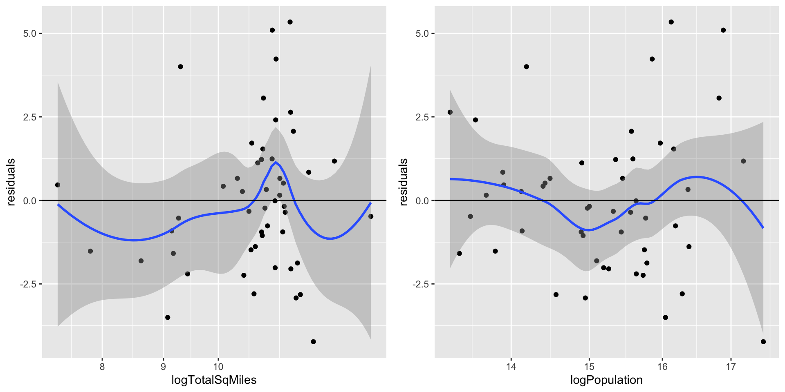
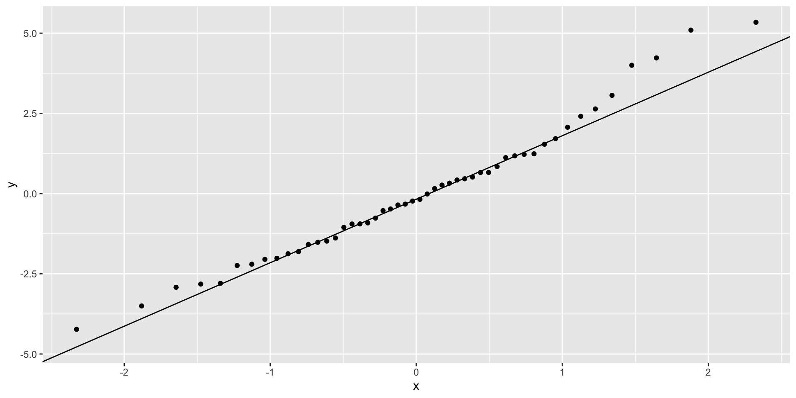

Functions:
ppcor::pcor(data): partial correlationppcor::spcor(data): semi-partial correlationcar::vif(lm_output): variance inflation factorhatvalues(lm_output): leverageresiduals(lm_output): model residualsrstandard(lm_output): internally studentized residuals (distance measure)rstudent(lm_output): externally studentized residuals (preferred distance measure)dffits(lm_output): DFFITS influence measuredfbetas(lm_output): DFBETAS influence measurecooks.distance(lm_output): Cook’s distance influence measurecovratio(lm_output): COVRATIO influence measureWe’ll work with the States data again today.
Last week, we predicted the number of airports from total square miles and population. We found that our variables are somewhat more normally distributed with fewer outliers if we take logs of each variable.
There are three types of correlations that we can look at for these data.
logNairports logTotalSqMiles logPopulation
logNairports 1.0000000 0.7141517 0.5216795
logTotalSqMiles 0.7141517 1.0000000 0.2092757
logPopulation 0.5216795 0.2092757 1.0000000These pairwise correlations ignore the existence of the other variable.
Partial and semi-partial correlations can be computed in R using the ppcor package. The function pcor() function calculates partial correlations, and the function spcor() function calculates semi-partial correlations.
logNairports logTotalSqMiles logPopulation
logNairports 1.0000000 0.7251744 0.5437983
logTotalSqMiles 0.7251744 1.0000000 -0.2734176
logPopulation 0.5437983 -0.2734176 1.0000000Partial correlations are at the intersection of the two variables of interest, other variables are partialled out. These reflect the shared variance between the two variables that is not shared by the other variables.
logNairports logTotalSqMiles logPopulation
logNairports 1.0000000 0.6186764 0.3806539
logTotalSqMiles 0.7091166 1.0000000 -0.1913898
logPopulation 0.5317568 -0.2332639 1.0000000Semi-partial correlations are not symmetric. Look for the DV in the rows, and the IV of interest in the columns. For example, \(0.6186764^2 = 0.3827605\) is the proportion of variance in logNairports that is uniquely predicted by logTotalSqMiles, above and beyond logPopulation.
Considering the three types of correlations, treating logNairports as the DV.
Partial correlations are always larger in magnitude than semi-partial correlations. There is no necessary relationships between these and the bivariate Pearson correlation. In fact, if there are distorting effects, the Pearson correlations can have a different sign than the partial or semi-partial correlations!
At this point, we’ll add the two-digit state abbreviation as row names to the dataset. Although the tidyverse doesn’t particularly like the use of row names, these will help us make sense of our regression diagnostics later.
We will next fit the regression model (without taking logs) from last week.
TotalSqMiles Population
1.017082 1.017082 In this example, the VIF is very close to 1 for both predictors, meaning that the standard errors of the associated regression coefficients is minimally affected by the presence of other predictors.
As a second example, suppose we think incarceration rates are related to religious and political views.
Estimate Std. Error t value Pr(>|t|)
(Intercept) -2801.40283 2943.00473 -0.9518853 0.3461302
PctIrreligion -6.96092 4.75179 -1.4649049 0.1497486
PctHarris2024 40.34467 29.51451 1.3669436 0.1782866
PctTrump2024 31.25470 29.56891 1.0570123 0.2960256PctIrreligion PctHarris2024 PctTrump2024
1.700883 206.830480 198.217952 (Because the U.S. doesn’t have viable third parties,) PctHarris2024 and PctTrump2024 are highly (negatively) correlated. As a result, we don’t gain much predictive power from including both, and we lose a lot in terms of power, as reflected by the increased standard errors of the estimated coefficients.
mod2 has moderate predictive power.
This is also a good place to remind ourselves that correlation does not equal causation. Even if we can predict a phenomenon fairly well, that does not mean that we have identified the causes of the DV.
For the hypothesis tests to be accurate, we need to satisfy certain assumptions about the residuals:
Heteroscedasticity of residuals can suggest an omitted variable or an omitted curvilinear relationship between a predictor and the outcome.
To analyze residuals graphically, it is convenient to add model residuals to the data. Here, we return to predicting airports.
To evaluate homoscedasticity, we can plot the residuals against each predictor. Adding a loess line with standard error bar to this plot can help us interpret the results. We want to look for:
plot1 <- ggplot(dat2, aes(logTotalSqMiles, residuals)) + geom_point() +
geom_smooth(method = loess, se = TRUE, formula = y ~ x) +
scale_x_log10() + geom_hline(yintercept = 0)
plot2 <- ggplot(dat2, aes(logPopulation, residuals)) + geom_point() +
geom_smooth(method = loess, se = TRUE, formula = y ~ x) +
scale_x_log10() + geom_hline(yintercept = 0)
gridExtra::grid.arrange(plot1, plot2, nrow = 1)
For both variables, positive residuals have somewhat larger magnitudes than negative residuals. Heteroscedasticity is harder to ascertain because there are only so many data points, but there are no major signs of concern (maybe slightly less variance at low square mileages?)
We can also evaluate the normality of residuals using our usual methods such as qq plots.

There is some deviation from normality, possibly caused by the remaining outliers in the data (which we will evaluate next).
For leverage values, we want to take a closer look at values greater than \(3(p+1) / N = 9 / 50 = .18\).
It can be difficult to visually identify individual values. Instead, we pick out leverage values greater than the cutoff for each model.
In mod1, Alaska, California, and Texas (the states with the highest total square miles) have the highest leverage.
Distance measures consider unusual values of the criterion given the predictors.
For externally studentized residuals, we want to take a closer look at values greater than 2.5.
Here, the first model identifies Florida and Michigan as possible outliers.
Leverage and distance are useful for telling which observations are unusual relative to the other observations. Neither of these statistics necessarily means that the observation has high impact.
Influence measures are most useful for this purpose:
Let’s look at DFFITS first, which looks at the standardized change in predicted scores. We want to flag observations higher than \(2\sqrt{(p+1)/N} = 2\sqrt{.06} = .49\) for large sample sizes, and higher than 1 for moderate sample sizes. I consider 50 to be closer to “moderate” than “large”, but let’s explore both cutoffs.
AK CA FL
-1.1021537 -2.3368975 0.9012201 AK CA
-1.102154 -2.336897 Again, we flag Alaska (high area state), California, and Florida (all high area and high population states).
Next, let’s look at DFBETAS, which looks at the standardized change in regression coefficients. We want to flag observations with absolute values higher than \(2/\sqrt{N} = 2/\sqrt{50} = .28\) for large samples, and > 1 for moderate samples. This measure considers each regression coefficient separately.
(Intercept) TotalSqMiles Population
AK 0.28947720 -1.0799105 0.2763140
CA 1.09635144 -0.1699070 -2.2333479
FL -0.14898177 -0.1461390 0.8097488
NY -0.05079392 -0.1035019 0.4207587
TX -0.19416086 0.1660704 0.2902327States with the largest physical area or populations - Alaska, California, Florida, New York, and Texas - are identified as influential for either slope coefficients. Alaska is the only state to have high influence on TotSqMiles.
Next, let’s apply Cook’s distance, which looks at the standardized squared difference in predicted scores. Here, we use a cutoff of 1.
Only California has high distance.
Finally, let’s look at COVRATIO, which looks at the change in the standard errors of regression coefficients. Here, we use a cutoff of |COVRATIO-1| \(\geq 3p/N\), and because our COVRATIO values are positive, this translates to a cutoff of 1.12. Alaska, California, and Texas are again identified.
This is a tricky example case. Alaska, in particular, seems to be the most influential point. Alaska is indeed unusual in that it has a relatively small population, but it is easily the largest U.S. state and it has a large number of airports (because air travel is either the most convenient, or the only, way to arrive at many Alaskan towns). States with relatively large populations, including California, Texas, New York, and Florida, also seem to have outsized influence, so it may be worthwhile to continue exploring nonlinear transformations of the predictors.
To improve this model, we might try to identify variables to add to the model that would better reflect the reasons why Alaska is unusual. Another option we could try for modeling these data is to assume a nonlinear relationship between the number of airports and the inputted variables. More advanced generalized linear models (GLMs) such as poisson regression or negative binomial regression (not covered in detail in this course) may be more appropriate, especially because Nairports is a count variable.